Stylingadvies
Tips en tricks om meer uit je ruimte te halen. Ook als low budget pakket.
Voor wie zelf aan de slag wil
Interieuradvies en ontwerp in Lichtenvoorde
Agnes helpt je met kleur, licht en indeling. Van een paar goede tips tot een compleet ontwerp, voor elk budget en altijd rond jouw wensen.
5,0 op Google, uit 2 reviews
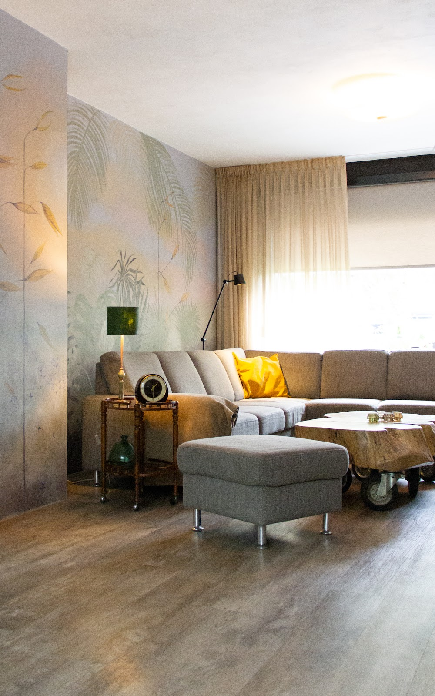
Waar je leeft en werkt, wil je je prettig voelen. Indeling, kleur, materialen en verlichting bepalen samen de sfeer. Duurzaam, vintage, oud of nieuw: alles kan.
Kom je er zelf niet (helemaal) uit? Dan zet Agnes haar creativiteit en kennis in om jouw ruimte in te richten of te veranderen. Jouw wensen staan daarbij centraal.
"Subtiele veranderingen kunnen grote effecten hebben."
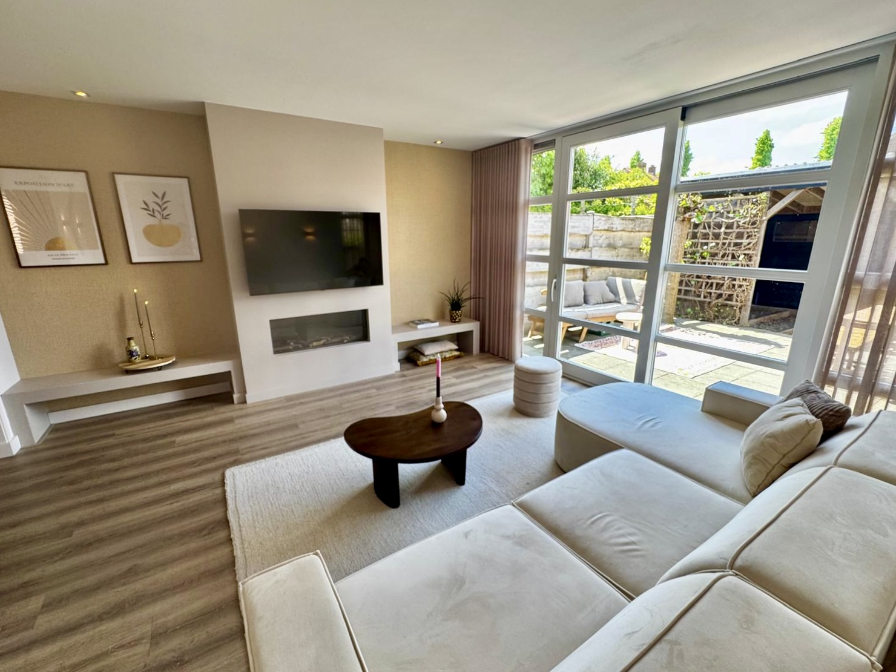
Tijdens een gratis en vrijblijvend kennismakingsgesprek, aan tafel of telefonisch, bepalen jullie samen welk advies het beste bij je past.
Tips en tricks om meer uit je ruimte te halen. Ook als low budget pakket.
Een gedegen plan waar je mee aan het werk kunt: indeling, kleur, verlichting en meubels. Ook maatwerk, zoals een wandkast of badkamermeubel.
Extra opties om het ontwerp visueel compleet te maken, zodat je je nieuwe ruimte al ziet voordat er iets verandert.
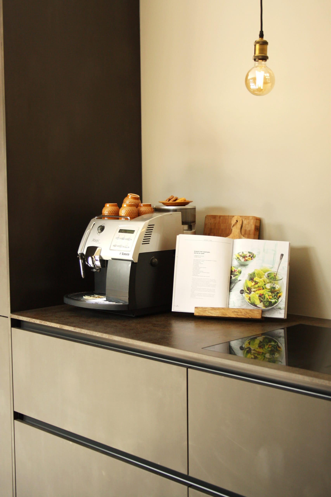
Indeling, kleur en verlichting
De keuken kozen de opdrachtgevers zelf bij een keukenspeciaalzaak. Agnes dacht mee over de opstelling, het kleurgebruik, de verlichting en de sfeer.
Het is een open keuken die in verbinding staat met de eet- en woonkamer. Dat moest zo blijven, maar het zicht op het aanrecht wilden ze beperken. Een verhoogd gedeelte naar de rest van het huis bleek meteen de beste plek voor de verhoogde vaatwasser.
Ontwerp en projectbegeleiding
Eenvoudig, maar met een unieke vintage uitstraling. Dat was in de omgeving niet te vinden, dus gingen Agnes en de opdrachtgevers samen op zoek, tot bij een tegelbedrijf dat precies deze vormen kon leveren.
Het wastafelmeubel, de tussenwand met kast en de indeling zijn van Agnes' hand. Zij begeleidde het project van brainstorm tot uitvoering en stemde af met de vakmensen, zodat de opdrachtgevers ontlast werden.
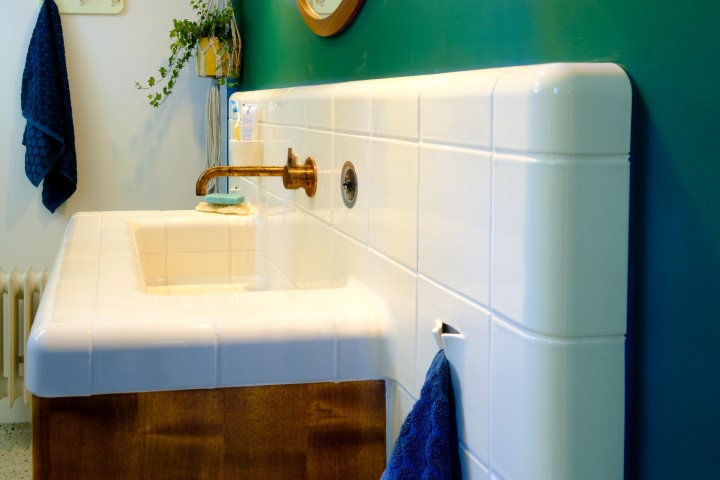
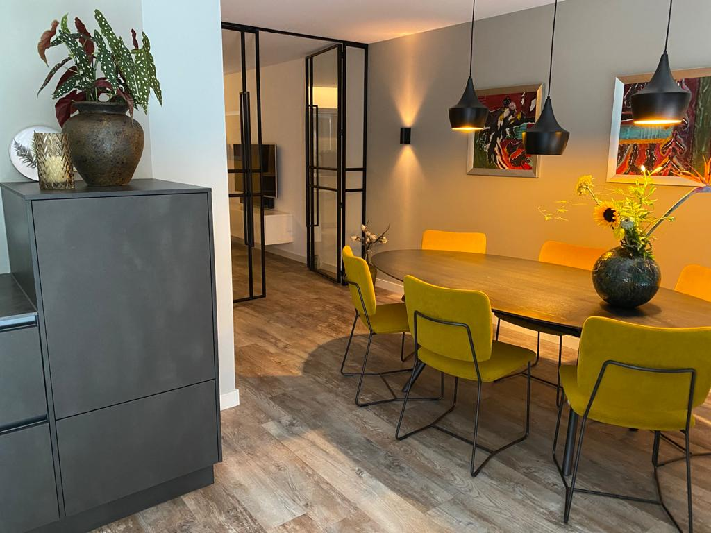
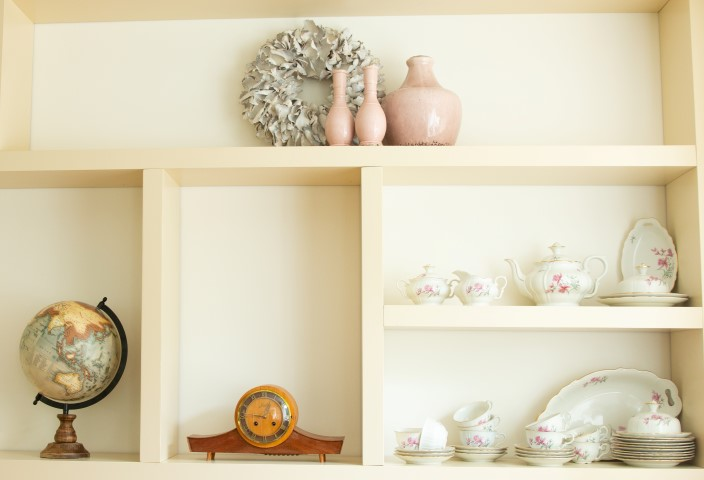
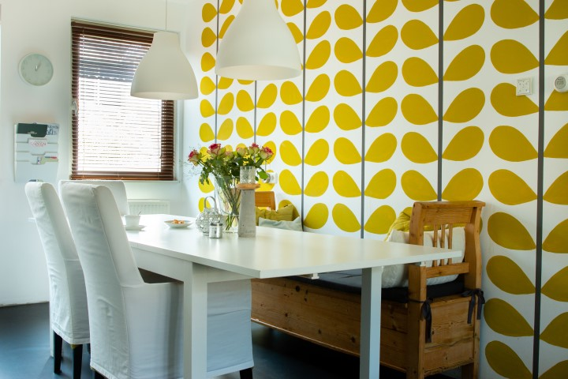
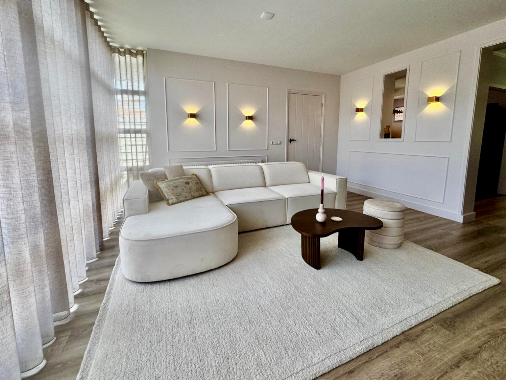
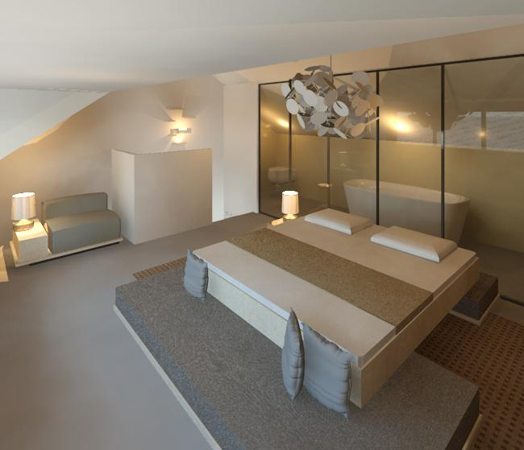
Een ruimte waar je leeft of werkt moet praktisch zijn. Voor iedereen is dat anders, dus daar begint Agnes mee. Wil je bestaande meubels houden en combineren met nieuwe, of juist alles nieuw? Samen maak je er een harmonieus en persoonlijk interieur van.
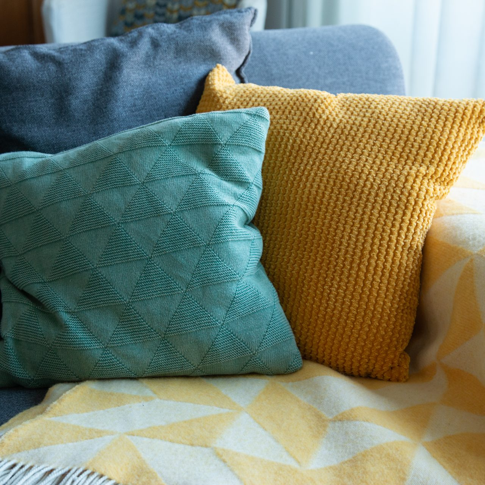
Gratis en vrijblijvend, aan tafel of telefonisch. Jullie kiezen samen het advies dat bij je past.
Zodra het pakket gekozen is, bekijkt Agnes de ruimte en meet die in.
Jullie bespreken je wensen en wat er nodig is in de ruimte.
Wat blijft en wat wordt anders? Persoonlijke vintage "kostbaarheden" krijgen een mooie plek.
Welke stijl past bij jou? Kleur, licht en materialen vallen op hun plek.
5,0 op Google, uit 2 reviews
"Samen met Agnes begonnen we aan ons project nieuwe keuken en aanpassing woonkamer. Agnes luisterde eerst goed naar onze wensen. Daarna deelde ze vol enthousiasme haar ideeën, waardoor wij soms tot aangename andere ideeën kwamen om onze kamer en keuken opnieuw in te richten. Tijdens de verbouwing stond ze ook telkens we..."
"Agnes heeft ons Atelier helemaal naar onze wensen ontworpen. Nog steeds blij mee...."
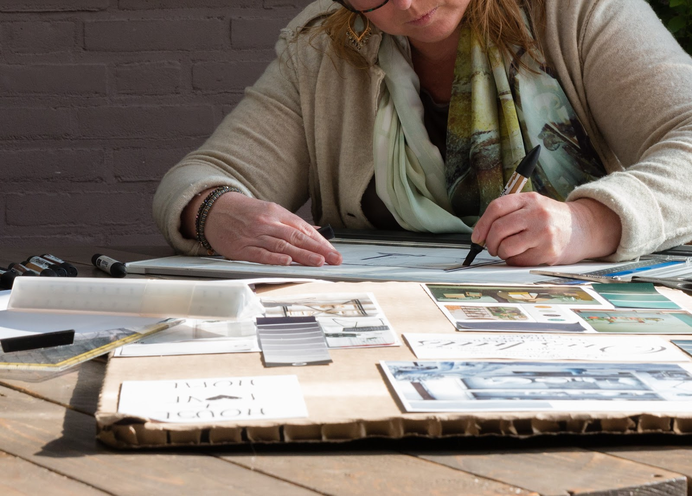
Binnenhuisarchitectuur, sinds 2008
Als kind was Agnes al altijd aan het tekenen, knutselen en creëren. Haar slaapkamer kreeg keer op keer een metamorfose. Ze ging eerst in de detailhandel werken, maar het bleef kriebelen. Naast haar werk volgde ze een opleiding binnenhuisarchitectuur, en in 2008 begon ze haar eigen ontwerp- en adviesbureau.
Ze heeft een voorliefde voor vintage en 2nd hand. Zo krijgt ook een helemaal nieuw interieur een eigen karakter, met jouw persoonlijke kostbaarheden. Een paar mondelinge adviezen of een volledig uitgewerkt plan: jouw wens staat voorop. Agnes prikkelt je graag met haar ideeën, en dat levert vaak verrassende resultaten op.
Haar creativiteit zit ook in haar schilderijen en muurschilderingen. Steeds nieuwe onderwerpen, steeds andere technieken.
Lid van IN
Het netwerk van interieurprofessionals: een plek voor inspiratie, verbinding en vakinhoudelijke ontwikkeling.
Heb je een vraag of wil je een vrijblijvend kennismakingsgesprek? Bel of mail gerust.
06 40 35 76 38